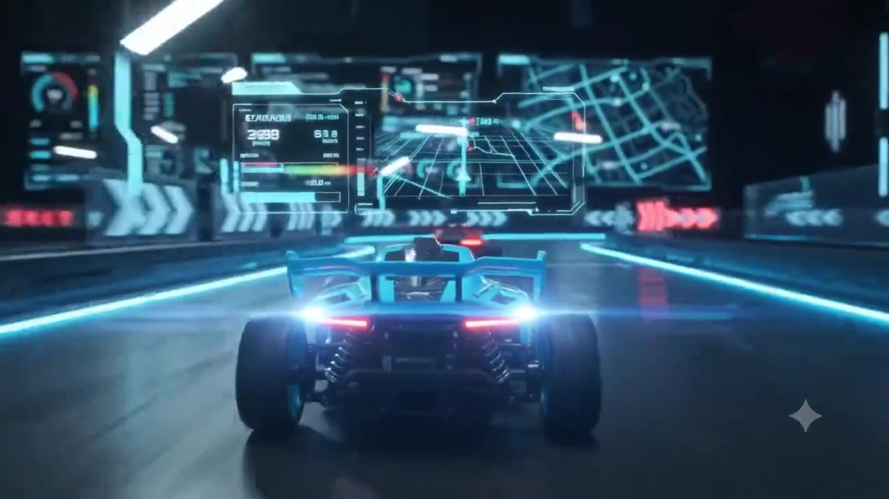
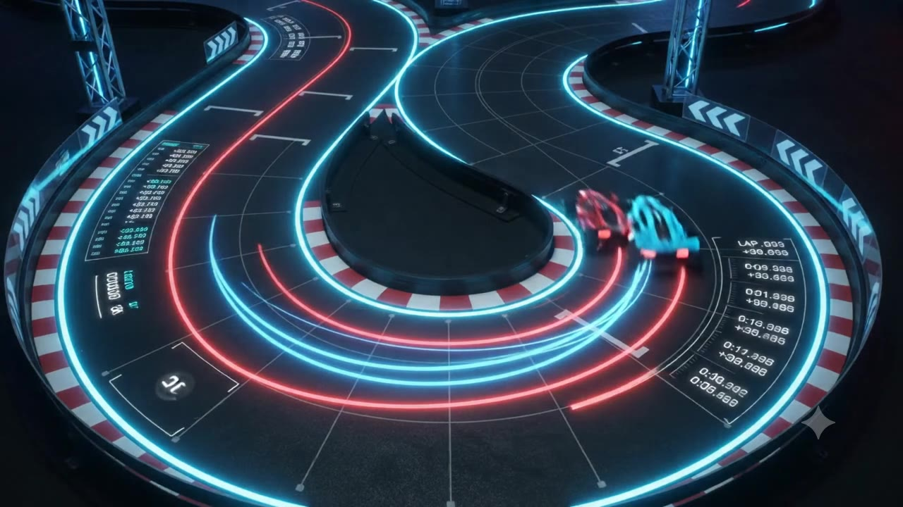

IB MYP DESIGN · CRITERION D · 형성평가
EV GRAND PRIX
이 전기자동차, 목표를 달성했을까?
데이터로 평가하고, 더 빠르게 개선하기
입장 전 전자칠판에 띄워 두는 표지. 학생들이 앉으면 바로 다음 슬라이드(질문)로 넘어간다.
[입장 · 수업 전]
(학생들이 자리에 앉는 동안 표지를 띄워 둔다)
자, 다 앉았나요? 시작하겠습니다.
오늘은 차를 '평가하는 법'을 연습하는 날이에요.
선생님이 미리 만들어 둔 전기자동차로 3m 시험 주행을 세 번 찍어 왔어요.
그 영상과 기록을 보고, 이 차가 목표를 달성했는지 따져 볼 거예요.
오늘 익힌 방법으로 다음 시간에는 여러분 차를 직접 평가합니다.
[클릭 → 다음 슬라이드]

QUESTION · 생각해 볼까요?
어떤 전기자동차가
가장 잘 만든 차일까?
도입 (0~4분). “가장 빠른 차”와 “가장 똑바로 가는 차” 두 선택지를 던지고 옆 친구와 10초 이야기. 학생 의견을 1~2명만 듣고, 답은 주지 않는다. 예: 2.5초에 갔지만 20cm 벗어난 차 vs 3.2초 걸렸지만 2cm만 벗어난 차 — 누가 더 잘 만들었나? 오늘 잴 두 가지(속도·직진성)를 자연스럽게 미리 보여 주는 장치. “둘 중 하나가 아니라, 처음에 정한 목표(속도·직진성)를 달성했는가가 기준”이라는 결론은 정리 단계에서 다시 연결.
[도입 · 0~2분]
질문 하나로 시작할게요.
어떤 전기자동차가 가장 잘 만든 차일까요?
[클릭] 3m를 가장 빨리 간 차일까요?
[클릭] 아니면 옆으로 새지 않고 가장 똑바로 간 차일까요?
예를 들어 볼게요. 한 대는 3m를 2.5초 만에 갔는데, 옆으로 20cm나 벗어났어요.
다른 한 대는 3.2초 걸렸지만, 2cm밖에 안 벗어나고 거의 똑바로 갔어요.
진짜 도로를 달리는 차라면 어느 쪽이 더 잘 만든 차일까요? 옆 친구랑 10초만 이야기해 보세요.
(1~2명 발표 듣기 — 답은 정해 주지 않는다)
좋아요. 다양한 의견이 나왔어요.
이 질문의 답은 수업 마지막에 다시 정리해 볼게요.
[클릭 → 다음 슬라이드]
TODAY’S MISSION
오늘의 목표
01
시험 데이터를 근거로 자동차가 설계 목표를 달성했는지 판단할 수 있다.
02
못 미친 원인을 차의 구조와 연결해 개선 방안을 제안할 수 있다.
MYP 기준 D
형성평가 · 연습
D-1 테스트 방법 · D-2 성과 분석 · D-3 개선 방안 · D-4 사용자 영향
오늘은 형성평가(연습) — 점수가 아니라 피드백을 위한 시간이라고 먼저 안내. 학습 목표 2개를 읽고, 오늘 쓰는 답은 모두 “숫자 근거”가 있어야 한다고 강조. 기준 D 네 요소가 학습지의 D-1~D-4 칸과 그대로 연결된다고 짧게 안내.
[도입 · 2~4분]
오늘 우리가 할 일은 두 가지예요.
[클릭] 첫째, 시험 데이터를 근거로 자동차가 설계 목표를 달성했는지 판단하기.
선생님 차의 목표는 선생님이 미리 정해 뒀어요. 3m를 몇 초 안에 가는지, 그리고 얼마나 똑바로 가는지.
그 목표랑 실제 기록을 비교하는 거예요.
다음 시간엔 여러분이 정한 목표로 똑같이 해 봅니다.
[클릭] 둘째, 목표에 못 미친 부분이 있다면 차의 어느 부분 때문인지 찾아서 개선 방안을 마련하기.
[클릭] 이건 IB 평가 기준 D, ‘평가하기’예요. 오늘은 점수를 매기는 날이 아니라 연습하는 날, 형성평가예요.
테스트 방법을 정하고, 결과로 목표 달성을 분석하고, 개선 방안을 내고, 사용자에게 주는 영향까지 돌아보는 것.
학습지의 D-1부터 D-4까지가 바로 이 순서예요.
하나만 기억하세요. 오늘 쓰는 모든 답에는 숫자가 들어가야 합니다.
[클릭 → 다음 슬라이드]
HOW TO EVALUATE
좋은 평가는 이 순서로 씁니다
STEP 1 · DATA
숫자
3회 기록과 평균
“평균 2.85초”
STEP 2 · JUDGE
판단
목표와 비교
“목표 3.00초 — 달성”
STEP 3 · UPGRADE
개선
원인과 바꿀 점
“바퀴 정렬을 고친다”
“잘 됐다 / 안 됐다”로 끝나면 느낌, 데이터가 들어가면 평가입니다.
전개 1 시작 (4분). 오늘 모든 답의 틀. 판서 가운데에 이 순서를 적어 두고 수업 내내 가리킨다.
[전개 1 · 4~5분]
그럼 평가는 어떻게 쓰는 걸까요? 딱 세 단계입니다.
[클릭] 1단계, 숫자. 3번 잰 기록과 평균을 봐요. 예를 들면 3m 주행 ‘평균 2.85초’.
[클릭] 2단계, 판단. 그 숫자를 목표와 비교해요. ‘목표 3.00초보다 빠르니까 달성.’
[클릭] 3단계, 개선. 원인과 바꿀 점을 써요. ‘바퀴 정렬을 고친다.’
[클릭] “잘 됐다, 안 됐다”로 끝나면 그건 느낌이에요.
데이터가 들어가야 평가가 됩니다.
(판서 가운데에 ‘숫자 → 판단 → 개선’을 적어 둔다)
[클릭 → 다음 슬라이드]
D-1 · TEST DESIGN
3m 한 번 달리고, 두 가지를 잰다
출발선에서 3m 도착까지 걸린 시간
📹 옆에서 찍은 영상으로 확인
단위: 초 ↓ · 3번
도착 지점에서 가운데 선과 벌어진 이탈 거리
📏 도착 지점의 자를 찍은 영상으로 확인
단위: cm ↓ · 3번
테스트 설계에는 무엇을(단위) · 어떻게 · 몇 번이 모두 들어가야 해요.
왜 3번? 한 번은 우연일 수 있어서 → 평균을 내면 믿을 만한 값(신뢰성)
학습지 D-1(테스트 방법 정하기)과 연결. 발문 “왜 한 번이 아니라 3번 쟀을까?”를 짧게 던지고 바로 답한다(옛 ‘왜 세 번’ 슬라이드 내용). 3m 주행 한 번에 두 가지(시간·이탈 거리)를 함께 잰다. 둘 다 숫자가 작을수록 좋다. 시간은 옆에서 찍은 영상(출발선~도착선이 한 화면에 보이게), 이탈 거리는 차가 도착한 뒤 도착 지점에 가로로 놓은 자(가운데 선 = 0)를 찍은 영상으로 읽는다. 선생님 차 1대로 3회 촬영. 학습지 D-1은 미리 채워 두었고 단위 칸 2개(초, cm)만 학생이 채운다.
[전개 1 · 5~7분]
선생님 차로 3m 주행을 했어요. 그런데 한 번 달릴 때 두 가지를 같이 잽니다.
[클릭] 첫째, 속도. 출발선에서 3m 도착까지 걸린 시간이에요.
옆에서 찍은 영상을 보면 출발과 도착이 다 보여요. 단위는 초.
[클릭] 둘째, 직진성. 차가 얼마나 똑바로 갔는지예요.
도착 지점에 자를 가로로 놓고, 차가 가운데 선에서 몇 cm 벗어났는지 찍어 뒀어요. 이걸 이탈 거리라고 해요.
둘 다 세 번씩 쟀고, 둘 다 숫자가 작을수록 좋은 기록이에요.
왜 한 번이 아니라 세 번 쟀을까요? 한 번은 우연이거나 실수일 수 있으니까요.
같은 조건에서 세 번 재서 평균을 내면 믿을 만한 값, ‘신뢰성’이 생겨요.
[클릭] 테스트 방법을 쓸 때는 세 가지가 꼭 들어가야 해요.
무엇을 재는지 단위까지, 어떻게 재는지, 그리고 몇 번 재는지.
학습지 D-1을 보세요. 선생님이 미리 채워 뒀어요. 단위 칸 두 개만 채우세요. 시간은? (초) 이탈 거리는? (cm)
[클릭 → 다음 슬라이드]
⚠ CHECK THE GAP
세 기록이 고르게 나왔나?
이렇게 확인해요
가장 빠른 기록과 가장 느린 기록 차이 0.10초
빠른 기록 2.80초의 약 4%
20% 이내 → 믿을 만한 기록
20%를 넘는 기록은? 빼지 말고 종합 정리 ‘믿을 수 있나요?’에 적어요.
예시(7·8장과 같은 기록): 3m 주행 1회 2.80초, 2회 2.85초, 3회 2.90초. 가장 빠른 2.80초와 가장 느린 2.90초의 차이 0.10초 ÷ 2.80초 ≈ 0.036 → 약 4%. 20%는 수업에서 정한 어림 기준. 이탈 거리는 cm 단위로 작은 수라(예: 6cm와 12cm는 100% 차이) %로 따지지 않고 시간에만 적용한다. 막대 길이는 기록(초)에 비례(1초 = 150px). 발문: “만약 한 번만 3.60초가 나왔다면 빼고 평가해도 될까?” → 이유 없이 빼면 좋은 기록만 골라 쓰는 것. 빼지 말고 신뢰성 항목에 적는다.
[전개 1 · 7~9분]
이 차의 3m 주행 기록을 볼게요.
[클릭] 1회 2.80초. [클릭] 2회 2.85초. [클릭] 3회 2.90초.
막대를 보세요. 길이가 거의 비슷하죠?
[클릭] 얼마나 다른지 계산해 봐요. 가장 빠른 기록과 가장 느린 기록 차이는 0.10초.
빠른 기록 2.80초와 비교하면 약 4%밖에 안 돼요.
우리는 20% 이내면 믿을 만한 기록으로 보기로 했어요.
[클릭] 그런데 질문! 만약 한 번만 3.60초처럼 튀는 기록이 나왔다면, 그건 빼고 평가해도 될까요?
(잠깐 의견 듣기)
이유 없이 빼 버리면 좋은 기록만 골라 쓰는 거예요.
빼지 말고, 종합 정리 ‘이 결과를 믿을 수 있나요?’에 “한 기록이 튀어서 믿기 어렵다”고 적으면 돼요.
[클릭 → 다음 슬라이드]
D-2 · VERDICT RULE
목표 3m 3.00초 이하 — 판단은?
A · 2.80 / 2.85 / 2.90
2.85초
달성
3회 모두 통과
B · 2.55 / 2.96 / 3.04
2.85초
부분 달성
평균은 통과, 못 통과한 회차 있음
C · 3.10 / 3.20 / 3.30
3.20초
미달성
평균이 통과 못함
A와 B는 평균이 같아요. 그래서 회차 기록까지 보고 판단해요.
학습지 D-2의 판단 기준 그대로: 달성 = 3회 모두 통과 / 부분 달성 = 평균은 통과, 못 통과한 회차 있음 / 미달성 = 평균이 통과 못함. A·B 평균 모두 (2.80+2.85+2.90)÷3 = (2.55+2.96+3.04)÷3 = 2.85초. B의 최대 차이는 0.49÷2.55 ≈ 19%로 20% 기준 이내. A는 6장의 예시 차 기록과 같다. C는 (3.10+3.20+3.30)÷3 = 3.20초, 목표보다 0.20초 부족. 설명용 가상 차 3대. 달성 정도는 학생이 학습지에 직접 고른다. 같은 기준을 다음 장에서 이탈 거리에도 적용.
[전개 1 · 9~10분]
목표가 3m 3.00초 이하인 차 세 대를 볼게요.
[클릭] A는 2.80초, 2.85초, 2.90초. 평균 2.85초. 세 번 다 3초 안이니까 ‘달성’.
[클릭] B는 2.55초, 2.96초, 3.04초. 평균은 똑같이 2.85초예요. 그런데 한 번은 3초를 넘었죠? 그래서 ‘부분 달성’.
[클릭] C는 3.10초, 3.20초, 3.30초. 평균 3.20초, 평균부터 목표를 못 넘었으니 ‘미달성’.
[클릭] A와 B, 평균은 같은데 판단이 달라요.
그래서 평균만 보지 말고 회차 기록까지 봐야 해요.
학습지에서 달성 정도는 여러분이 직접 고르고, 까닭에 숫자를 넣어 쓰는 거예요.
그럼 이 기준을 직진성에도 똑같이 써 볼까요?
[클릭 → 다음 슬라이드]
D-2 · TWO RESULTS
속도와 직진성, 따로 판단해요
| 1회 | 2회 | 3회 | 평균 | 목표 | 목표와 차이 | 판단 |
|---|
| ⏱️ 시간 | 2.80 | 2.85 | 2.90 | 2.85초 | 3.00초 이하 | 0.15초 여유 | 달성 |
| ↔️ 이탈 거리 | 6 | 9 | 12 | 9cm | 10cm 이하 | 1cm 여유 | 부분 달성 |
까닭에는 평균 + 목표와 차이를 꼭!
빠르지만 휘어지는 차 → 고칠 곳은 바퀴 정렬 · 좌우 균형
설명용 예시(선생님 차 실제 기록 아님). 시간: (2.80+2.85+2.90)÷3 = 2.85초, 3회 모두 3.00초 이하 → 달성. 이탈 거리: (6+9+12)÷3 = 9cm, 평균은 10cm 이하지만 3회 12cm가 넘음 → 부분 달성(목표보다 1cm 여유, 한 회차는 2cm 초과). 목표와 차이: 시간 3.00 − 2.85 = 0.15초 여유, 이탈 거리 10 − 9 = 1cm 여유(둘 다 작을수록 좋으므로 목표 − 평균). 학습지에는 평균과 차이를 학생이 직접 계산해 쓴다. 한 번 달려도 결과는 두 가지로 따로 판단해야 하고, 못 미친 쪽이 D-3 개선의 출발점이 된다. 여기까지가 전개 1 (12분 지점).
[전개 1 · 10~12분]
같은 3번의 주행에서 나온 두 가지 기록이에요.
[클릭] 시간. 2.80, 2.85, 2.90초. 더해서 3으로 나누면 평균 2.85초.
목표 3.00초에서 평균 2.85초를 빼면 0.15초 여유. 세 번 다 3초 안이니까 ‘달성’.
[클릭] 이탈 거리. 6cm, 9cm, 12cm. 평균은 9cm로 목표 10cm보다 1cm 여유가 있어요.
그런데 3회에 12cm, 한 번은 목표를 넘었죠? 그래서 ‘부분 달성’.
[클릭] 이 차는 빠르긴 한데 조금씩 휘어져요.
그럼 고칠 곳은 모터가 아니라 바퀴 정렬이나 좌우 균형 쪽이겠죠.
이렇게 두 가지를 따로 판단해야 어디를 고칠지 보여요.
그리고 까닭에는 평균과 목표와의 차이, 이 두 숫자가 꼭 들어가야 해요.
자, 이제 읽는 법은 다 배웠어요. 선생님 차를 분석해 볼 시간입니다.
[클릭 → 다음 슬라이드]

MISSION 01 · 개인 분석
선생님 차를 분석하라!
1
화면 영상을 함께 보며 시간 · 이탈 거리 3회 기록
3
달성 정도 고르기 + 시간 차이 20% 확인
4
까닭 1개 · 종합 정리 ① ★ 끝나면 도전 ②
단계 안내 후 바로 다음 슬라이드(시험 영상)로 넘긴다. 처음 3분: 3회 영상을 차례로 틀어 주고 모두 함께 기록(약 1분 × 3). 이후 11분은 개인 계산·작성. 계산기 허용. 까닭은 부분 달성·미달성인 쪽 하나만(둘 다 달성이면 아무거나 하나). 순회하며 “그렇게 판단한 숫자는?”으로 근거를 묻는다. 피드백 기준: 시간·이탈 거리 두 가지 모두 숫자 근거(평균·목표와 차이)로 달성 정도를 판단했는가. 모두 같은 차(선생님 차)를 분석하므로, 같은 기록을 보고도 판단이 갈리는 학생을 찾아 두었다가 정리 단계 발표자로 쓴다. 먼저 끝난 학생은 ★도전: 종합 정리 ②‘선생님이 정한 목표가 적절했나’. 시간 안내(14분)는 말로만 한다.
[전개 2 · 12~26분 · 개인 분석 14분]
미션 1, 선생님 차를 분석하라!
[클릭] 먼저 선생님이 영상을 틀어 줄게요. 다 같이 보면서 학습지 D-2 표에 시간과 이탈 거리를 적으세요.
시간은 옆에서 찍은 영상, 이탈 거리는 도착 지점 자 영상이에요.
[클릭] 그다음 평균과 목표와의 차이를 계산하세요. 계산기 써도 돼요.
[클릭] 달성 정도를 고르고, 시간 기록이 고르게 나왔는지 20%도 확인하세요.
[클릭] 마지막으로 까닭을 하나만 쓰세요. 속도와 직진성 중에 부분 달성이나 미달성인 쪽으로요. 그리고 종합 정리 ①번.
빨리 끝난 사람은 ★도전 ②번까지 써 보세요.
시간은 14분이에요. 26분까지 써요.
(바로 다음 슬라이드로 넘겨 1회 영상부터 재생)
(순회하며 묻기)
· “그렇게 판단한 숫자는 뭐야? 목표랑 몇 초 차이야?”
· “세 기록 차이는 몇 %야? 20% 넘으면 종합 정리에 뭐라고 쓸 거야?”
· 먼저 끝난 학생 → ★도전 ②: “선생님이 정한 목표가 너무 쉽거나 어렵지 않았을까?”
(5분 남았을 때) 5분 남았어요. 까닭에 평균과 목표와 차이, 숫자 두 개가 들어갔는지 꼭 확인하세요.
MISSION 01 · 시험 영상
영상을 보며 학습지 D-2에 기록해요
앞 슬라이드에서 단계 안내 후 넘어온다. 1회 → 2회 → 3회 순서로 재생. 각 영상(17.5초) = 제목 → 실제 속도 주행(스톱워치는 도착 후에도 계속 감) → 도착선 느린 화면(1/4) → 도착 지점 자 확대. 1회에서는 도착선 느린 화면에서 한 번 멈추고 “앞 끝이 도착선에 닿는 순간의 숫자”를, 자 화면에서 “가운데 0에서 벌어진 거리(방향 무관)”를 시범으로 읽어 준다. 2·3회는 멈추지 않고 학생 스스로 읽게 한다(읽은 값이 조금씩 다르면 종합 정리 ‘오차’로 연결). 예시 정답: 2.80초·6cm / 2.85초·9cm / 2.90초·12cm. 버튼은 발표자 화면에서 눌러도 청중 화면이 같이 움직인다. 영상 위를 클릭하면 재생/멈춤.
[전개 2 · 12~15분 · 영상 함께 보기]
지금부터 선생님 차의 시험 영상을 보여 줄게요. 학습지 D-2 표를 펴세요.
(1회 재생)
먼저 옆에서 본 모습이에요. 스톱워치는 도착선을 지나도 멈추지 않아요.
차 앞 끝이 도착선에 닿는 순간의 숫자를 여러분이 직접 읽어야 해요.
(느린 화면에서 멈추고) 지금! 앞 끝이 도착선에 닿았죠? 숫자가 몇이에요? 시간 1회 칸에 쓰세요.
(이어서 재생) 이번엔 도착 지점 자예요. 확대 창에서 차 앞 끝 가운데가 0에서 몇 cm 벗어났는지 읽어요. 이탈 거리 1회 칸에 쓰세요.
(2회 재생) 2회는 선생님이 멈추지 않을게요. 스스로 읽어 보세요.
왼쪽으로 벗어나도 오른쪽으로 벗어나도, 벌어진 거리만 쓰면 돼요.
(3회 재생) 마지막 3회예요.
다 썼으면 평균과 목표와 차이를 계산하세요. 계산기 써도 돼요.
[클릭 → 다음 슬라이드: 문장 틀 띄워 두기]
DRIVER’S REPORT
이 틀에 맞춰 쓰세요
D-2 까닭 (1개) ( 시간 · 이탈 거리 )는 1회 ( ), 2회 ( ), 3회 ( ), 평균 ( )로
목표 ( )보다 ( 차이 )만큼 여유 있어서 / 부족해서 달성 · 부분 달성 · 미달성
D-3 개선 문제점 ( 테스트 결과 ) → 개선 방법 ( 무엇을 · 어떻게 )
→ 기대 효과 ( 몇 초 · 몇 cm 줄어들까 )
윗줄은 학습지 D-2 ‘그렇게 판단한 까닭’ 칸, 아랫줄은 D-3 ‘내 개선’의 세 칸(문제점 · 개선 방법 · 기대 효과)에 그대로 대응한다. 미션 1·2 진행 중 이 화면을 띄워 둔다.
[전개 2 · 미션 1 진행 중 띄워 두기]
까닭 쓰기가 어렵다면 이 틀에 맞춰 쓰세요.
[클릭] D-2 까닭. “이탈 거리는 1회 6cm, 2회 9cm, 3회 12cm, 평균 9cm로, 목표 10cm보다 1cm 여유 있지만 한 번 넘어서 부분 달성.” 이렇게 하나만 쓰면 돼요.
[클릭] D-3 개선. 문제점은 테스트 결과로, 개선 방법은 무엇을 어떻게 바꿀지, 기대 효과는 몇 초, 몇 cm 줄어들지.
학습지 D-3 칸 세 개가 이 순서 그대로예요.
[클릭] 숫자, 판단, 개선. 아까 배운 세 단계 그대로예요.
(시간이 되면) 자, 손 멈추고 앞을 봐 주세요. 이제 미션 2로 넘어갑니다.
[클릭 → 다음 슬라이드]
MISSION 02 · 개인 개선안 · D-3
어디를 고치면 좋아질까?
| 이럴 때 | 살펴볼 부분 |
|---|
| ⏱️ 시간이 오래 걸린다 | 모터 출력, 배터리 전압, 차 무게, 바퀴 마찰 |
| ↔️ 이탈 거리가 크다 | 바퀴 정렬, 축 휘어짐, 좌우 무게 균형 |
| ⏸️ 출발이 늦다·중간에 멈칫 | 기어 맞물림, 전선 연결, 바퀴 미끄러짐 |
“더 잘 만들기” ✕ → “무엇을 · 어떻게 바꿀까?” ✓ · 기본 1가지 ★ 도전 2가지
개인 활동. 각자 선생님 차 영상(필요하면 실물을 앞에 두고)과 구조가 비슷한 자기 차를 비교하며, 선생님 차가 달성 못한(또는 부분 달성) 테스트의 개선안을 학습지 D-3 ‘내 개선 1·2’에 쓴다. 오늘은 형성평가라 기본 1가지, 빨리 끝난 학생은 ★도전으로 2번째(IB D-3 상위 수준은 2가지 이상 — 다음 시간 총괄평가에서). 피드백 기준: 테스트 결과를 바탕으로 개선 방법을 무엇을·어떻게까지 구체적으로 썼는가. 선생님 차가 목표를 달성했다면 ‘더 줄이려면’으로 쓰게 한다. 개선안이 막연하면 “무엇을 어떻게?”로 되묻기. 타이머: 시계를 누르면 시작/일시정지.
[전개 3 · 26~33분 · 개인 7분]
미션 2, 어디를 고치면 좋아질까?
이번엔 각자 선생님 차를 고치는 기술자가 되어 볼 거예요.
선생님 차 영상을 다시 보고, 구조가 비슷한 여러분 차를 손에 들고 비교하면서,
목표를 못 이룬 부분의 원인과 개선 방법을 혼자 힘으로 찾아보세요.
막히면 이 표를 참고하세요.
[클릭] 시간이 오래 걸린다면 → 모터 출력, 배터리 전압, 차 무게, 바퀴 마찰.
[클릭] 옆으로 휘어서 이탈 거리가 크다면 → 바퀴 정렬, 축이 휘었는지, 좌우 무게 균형.
[클릭] 출발이 늦거나 중간에 멈칫한다면 → 기어가 잘 맞물렸는지, 전선이 헐겁지 않은지, 바퀴가 미끄러지는지.
[클릭] 그리고 ‘더 잘 만들기’는 개선 방법이 아니에요.
‘무엇을, 어떻게 바꿀지’를 써야 해요. 학습지 D-3에 개선 1가지를 쓰세요. 빨리 끝난 사람은 ★도전, 2번째까지.
선생님 차가 목표를 달성했다면 ‘여기서 더 줄이려면?’으로 쓰면 됩니다.
여러분 차를 직접 손에 들고 비교해 보세요. 7분 줄게요. (타이머 시작)
(순회하며) 개선안이 막연하면 → “무엇을 어떻게 바꿀 건데? 그러면 몇 초 줄어들 것 같아?”
(막히는 학생이 많으면 전체에게 힌트) 모터 쪽 기어를 크게, 바퀴 쪽 기어를 작게 하면 속도는 빨라지지만 힘이 약해져서 출발이 늦거나 멈출 수 있어요. 하나를 고치면 다른 점도 바뀐다는 걸 생각해 보세요.
🏁 FINISH LINE
처음 질문: 어떤 전기자동차가 가장 잘 만든 차일까?
좋은 차 =
내 목표를 달성한 차
성찰하는 사람 · D-4는 다음 시간에
이 차가 진짜 전기차라면, 타는 사람에게 좋은 점과 아쉬운 점은?
오늘 나는 ‘느낌’으로 평가했나, ‘근거’로 평가했나?
NEXT RACE · 다음 시간: 오늘 배운 방법으로 내 차 평가하기
정리 (33~40분 · 발표 2분 → 결론 1분 → 성찰 한 줄 1분 → 예고·걷기 2분). 먼저 2명 발표 — 같은 선생님 차를 보고 서로 다른 판단(예: 달성 vs 부분 달성)을 한 학생 2명. 평가 문장 틀로 1분 이내. 판단이 갈린 까닭(어느 숫자를 봤는지)을 짚는다. 그다음 이 슬라이드로 도입 질문에 답한다. 오늘은 ‘느낌 vs 근거’ 한 줄 성찰만 쓰고, D-4(사용자 영향: 좋은 점·아쉬운 점과 까닭, 바꿀 점, 배운 점)는 다음 시간에 쓴다. 끝나기 전 학습지에 이름 확인 후 걷기.
[정리 · 33~40분]
(먼저 2명 발표 — 같은 차를 보고 판단이 서로 다른 학생 2명. 평가 문장 틀로 1분 이내)
발표 고마워요. 같은 차, 같은 기록인데 판단이 달랐죠? 어느 숫자를 봤는지가 달랐어요. 그래서 까닭에 숫자를 꼭 써야 해요.
수업 처음에 했던 질문 기억나요?
어떤 전기자동차가 가장 잘 만든 차일까?
[클릭] 오늘 우리가 찾은 답은 이거예요.
좋은 차는 가장 빠른 차도, 가장 똑바로 가는 차도 아니에요. 처음에 정한 속도와 직진성 목표를 달성한 차입니다.
그리고 목표에 못 미쳤더라도, 왜 그런지 알고 고칠 방법을 찾았다면 그것도 훌륭한 설계예요.
[클릭] 마지막으로 성찰하는 사람이 되어 볼게요.
오늘 나는 ‘느낌’으로 평가했나요, ‘근거’로 평가했나요? 학습지 맨 아래에 한 줄로 써 보세요. 1분 줄게요.
이 차가 진짜 전기차라면 타는 사람에게 어떤 점이 좋고 아쉬울지는, 학습지 D-4에 다음 시간에 이어서 씁니다.
[클릭] 다음 시간에는 오늘 연습한 숫자 → 판단 → 개선 순서로, 이번엔 여러분 차를 직접 평가합니다. 그게 진짜 평가예요!
(학습지에 이름 썼는지 확인하고 걷기) 수고했어요. 오늘 수업 마치겠습니다.